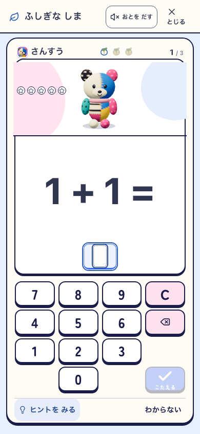
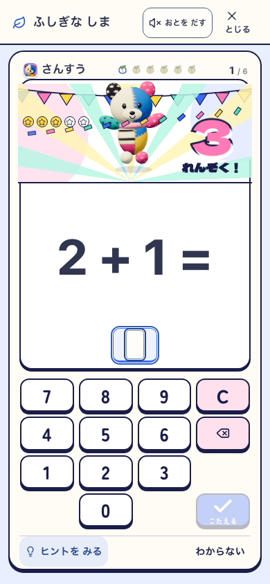
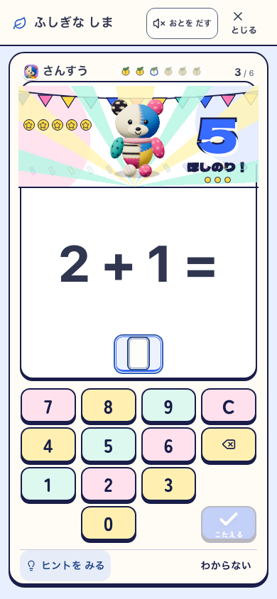
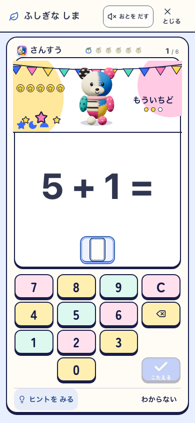
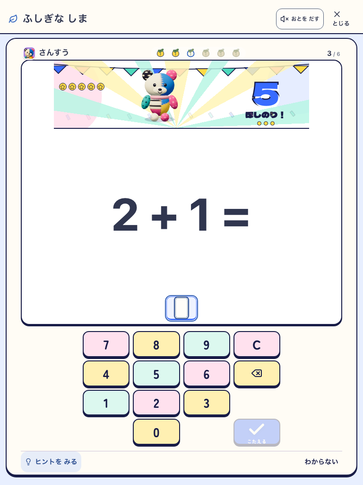
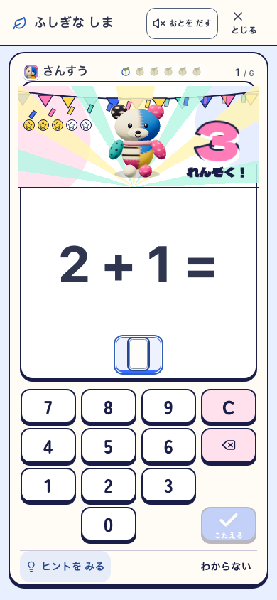
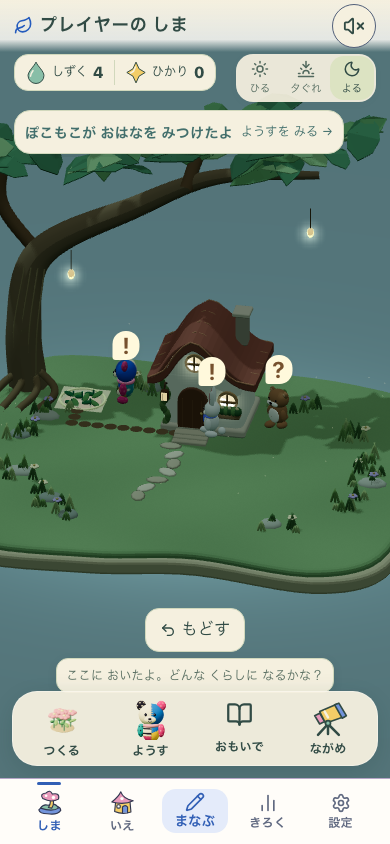
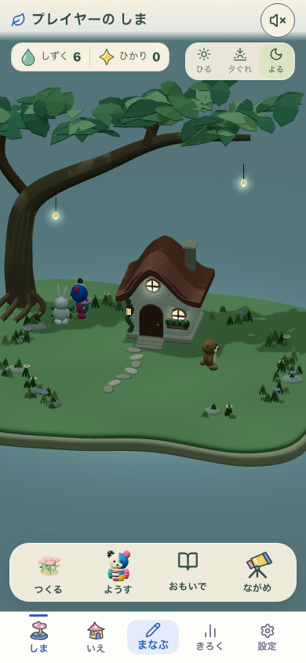
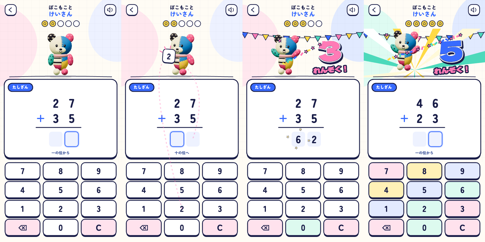

390×844 / live-original / 音OFF
3問の完了と3連続がこの行程で一致。カウンターは別。
節目に大きな数字と色面。問題入力は待たせない。
連続は0。得た光・スタンプと舞台の段階は残る。
768×1024 / live-original / 音OFF実際の学習画面。問題・テンキーの位置を保ち、上端の舞台で連続演技と節目の変化を起こす。DEVの使い捨てプロフィールで実回答した記録。検証条件と未確認範囲。

390×844 / live-original / 音OFF
3問の完了と3連続がこの行程で一致。カウンターは別。
節目に大きな数字と色面。問題入力は待たせない。
連続は0。得た光・スタンプと舞台の段階は残る。
768×1024 / live-original / 音OFF52ec984f-pop-v5-working / Island + Life + Fantasy flags ON。実設定から本人の回答で進み、実SWのofflineへ移った記録。初回3問と購入・配置を実操作。報酬の注入はしていない。




画像生成から制作した独立Canvas試作。実装のruntime証拠とは区別する。試作のスプライトから、本体では元の3Dモデルを直接動かす構造へ移した。比較試作を開く。
